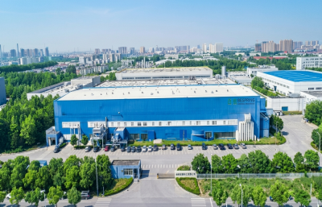

tripolifosfato de sódio (STPP)
CAS: 7758-29-4
Fosfato de grau alimentício usado para retenção de água, emulsificação e estabilização nas indústrias de processamento de carne, frutos do mar e fabricação de alimentos.
Bespring Chemical fornece uma amplia gama de matérias-primas químicas industriais para alimentação, alimentação, tratamento de água, mineração, agricultura e aplicações industriais.
CAS: 7758-29-4
Fosfato de grau alimentício usado para retenção de água, emulsificação e estabilização nas indústrias de processamento de carne, frutos do mar e fabricação de alimentos.

CAS: 10124-56-8
Fosfato multifuncional usado em tratamento de água, detergentes, processamento de alimentos e aplicações industriais anti-escalamento e quelantes.

CAS: 7320-34-5
Pirofosfato de potássio de grau alimentício utilizado como agente quelante, emulsificante, agente tampão e aditivo de retenção de água em processamento de carne, frutos do mar, produtos lácteos, tratamento de água e aplicações industriais.

CAS: 7785-88-8
Fosfato de Alumínio de Sódio (SALP) é um ácido fermento de grau alimentício usado em sistemas de fermento em pó, formulações de padaria e aplicações industriais de processamento de alimentos para controlar a liberação de gás e melhorar a textura do produto.

CAS: 7757-93-9 / 7789-77-7
O Fosfato de Dicálcio (DCP) é amplamente utilizado como uma fonte de cálcio e fósforo de alta qualidade na nutrição animal, produção de pré-mistura de alimentos e pecuária. É um aditivo mineral essencial para as formulações de aves de capoeira, suínos, bovinos e alimentos para a aquicultura.

CAS: 7758-23-8
Fosfato monocálcico (MCP) é uma fonte de cálcio e fósforo altamente biodisponível amplamente utilizado na nutrição animal, produção de pré-mistura de alimentação animal, ração aquícola e aplicações de fortificação de alimentos. É produzido através da reação do ácido fosfórico com compostos de cálcio, oferecendo excelente solubilidade e alta eficiência de absorção de nutrientes. O MCP é especialmente adequado para aves de capoeira, suínos, ruminantes e espécies aquáticas, apoiando o crescimento saudável e o desenvolvimento ósseo.

CAS: 9004-32-4
Um derivado de celulose versátil amplamente utilizado como espessante, estabilizador, ligante e agente de retenção de água no processamento de alimentos, formulações de detergente, operações de mineração e várias aplicações industriais.

CAS: 4075-81-4
Amplamente utilizado conservante de alimentos para padaria, laticínios, bebidas e alimentos processados para evitar o crescimento do molde e prolongar a vida útil.
Bespring Chemical é um fabricante à base de China e fornecedor mundial de ingredientes químicos à base de fosfato e matérias-primas industriais, originários da década de 1970 e especializados na produção de fosfato de grau alimentício e industrial. Com décadas de experiência em fabricação e uma academia de suprimentos integrados, atendemos clientes globos B2B em processamento de alimentos, nutrição animal, tratamento de água, agricultura e aplicações industriais com qualidade estável e fornecimento de exportação confiável.

Comece com o seu desafio de produção. Explore funções de ingredientes, aplicações técnicas e produtos voltados para seis indústrias que servimos.
 01
Transformação de alimentos
Textura, prazo de validade, retenção de água e estabilidade da formulação.
Explore soluções
01
Transformação de alimentos
Textura, prazo de validade, retenção de água e estabilidade da formulação.
Explore soluções
 02
Animal Nutrition
Fontes minerais biodisponível para a produção de ração e pré-mistura.
Explore soluções
02
Animal Nutrition
Fontes minerais biodisponível para a produção de ração e pré-mistura.
Explore soluções
 03
Limpar os Detergentes do &
Construtores, quelantes e auxiliares de desempenho para sistemas de limpeza.
Explore soluções
03
Limpar os Detergentes do &
Construtores, quelantes e auxiliares de desempenho para sistemas de limpeza.
Explore soluções
 04
Tratamento da Água
Controle de escala, amaciamento e processo de condicionamento de água.
Explore soluções
04
Tratamento da Água
Controle de escala, amaciamento e processo de condicionamento de água.
Explore soluções
 05
Mineração & Minerals
Produtos químicos de processo que apoiam a separação e o tratamento do minério.
Explore soluções
05
Mineração & Minerals
Produtos químicos de processo que apoiam a separação e o tratamento do minério.
Explore soluções
 06
Agricultura
Inputs nutritivos e matérias-primas para a produção de fertilizantes.
Explore soluções
06
Agricultura
Inputs nutritivos e matérias-primas para a produção de fertilizantes.
Explore soluções
Explore como os ingredientes Bespring abordam as necessidades práticas de formulação e processo em alimentos, alimentação, tratamento de água e fabricação industrial.
 01
01
tripolifosfato de sódio · INS 451(i)
Aplicação prática de fosfato para gerenciamento de umidade, suporte de textura, estabilidade de emulsão e processamento consistente em carne e produtos à base de aves.
Ler o caso da aplicação 02
02
pirofosfato tetrapotássico · INS 450(v)
Funcionalidade de fosfato à base de potássio para formulações de frutos do mar permitidas que exigem tamponamento, sequestro e gerenciamento de umidade.
Ler o caso da aplicação 03
03
propionato de cálcio · E282
Uma aplicação de conservante focada no controle de moldes e planejamento de prateleira para pão, rolos e outros produtos de padaria criados por leveduras.
Ler o caso da aplicação 04
04
Fosfato monocálcico · grau para alimentação animal
Um aplicativo de alimentação mineral para fornecer fósforo e cálcio disponíveis em dietas de aves de capoeira e sistemas de pré-mistura.
Ler o caso da aplicação
05
hexametafosfato de sódio · CAS 10124-56-8
Uma aplicação de tratamento de água usando sequestro e efeitos de limiar para apoiar programas de controle de escala em sistemas industriais.
Ler o caso da aplicação
06
Tripolifosfato de sódio · Grau técnico
Uma aplicação de detergente-builder que suporta a suavização da água, suspensão do solo e desempenho de limpeza em formulações em pó.
Ler o caso da aplicaçãoA Bespring Chemical opera um sistema integrado de produção e exportação de produtos químicos na China, incluindo bases de fabricação, oficinas de produção especializadas, laboratórios de controle de qualidade independentes e instalações de armamento de produtos químicos a granel.



Orientação de fornecimento de alimentação animal, alimentação animal e produtos químicos industriais.
Verificar identidade legal, fonte do produto, especificações, documentos de qualidade, rastreabilidade e capacidade de exportação. O guia fornece uma lista de verificação de qualificação estruturada para equipes de contratação internacional.
Leia Guia completo →Compare STPP e SHMP por identidade química, função, grau, especificação, forma física e requisitos de qualificação do fornecedor.
Saiba mais →Comparar identidade de nutrientes, ensaio, forma física, limites de contaminantes e documentos ao fornecer MCP ou DCP.
Saiba mais →Entenda como os limites de grau, especificação, impureza, controles de fabricação e adequação do mercado alteram a base de aprovação.
Saiba mais →Bespring Exportações químicas para mais de 60 países e regiões em toda a Europa, Ásia, Oriente Médio, América do Norte, América do Sul, África e Oceania, apoiando a aquisição a longo prazo de B2B através de garantia de qualidade, documentação técnica, suporte de conformidade regulamentar e coordenação logística de exportação.